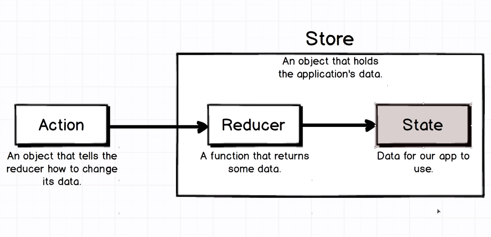
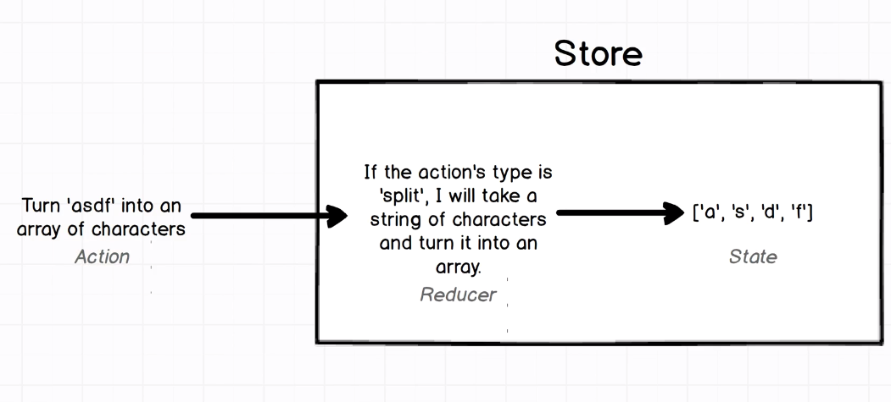

Important Lessons learned while learning React Native
Uses of components: functional, class components
Functional components
When you just wants to return some JSX from a component then use functional level component
Example:
const Button = () => {
return(
<View> click me </View>
);
}
Like here we don't perform any operation other than returning a View.
Class level components
when you wants to use lifecycle methods and and do complex things with states, prefer class level components as they are more powerful.
class Button extends Component {
// A react lifecycle method...
componentWillMount() {
//Here do something relative...
}
render() {
return (
<View>
<Text>
</Text>
</View>
);
}
}
De structuring of objects
At component level
Whenever you want to fetch multiple things from a JS object like you have multiple styles defined inside styles object:
const styles = {
viewStyle: {
backgroundColor: '#F8F8F8',
justifyContent: 'center',
alignItems: 'center',
elevation: 8,
position: 'relative'
},
textStyle: {
fontSize: 20
}
}
And now you want to access these both at some place, then use de structuring of objects so instead of writing like this :
<View style={this.styles.viewStyle}>
<Text style={this.styles.textStyle}> {props.headerText} </Text>
</View>
-
First make a different constant
const { textStyle, viewStyle } = styles; -
Use it directly this way,
jsx <View style={viewStyle}> <Text style={textStyle}> {props.headerText} </Text> </View>
This makes code lot more readable and clean ;)
At files level
There will be certain times when you have lot of reusable components in your app, de structuring can save lot lines of code here.
STEPS
-
Make a common directory/package for all re-usable components and create an index.js file inside that directory.
-
Now for each component instead of exporting it like this
jsx export default component -
export it as an object.
jsx export { Component} -
Inside index.js file what we simply do is import all the components in same directory and immediately export them. but with different syntax:
jsx export * from './Button'; export * from './Card'; -
Now whenever you write directory path in which any index.js file exists then it will by default load data from index file. That's why we called it index 1st place.
jsx import { Card, CardSection, Button, Input, Spinner } from './common'
Declaring functional components in different ways...
This below codes are same, You can create components this way
Return should be in same line if One Line is gonna return
const App = () => {
return <Text> Swesome </Text>
}
You can omit return statement if only single component is a return
const App = () => (
<View> </View>
)
Full declaration, here returned items are mostly multiple
const App = () => {
return (
<Text> 2nd Way </Text>
<Text> 3rd Way </Text>
);
}
Redux - Simplest understanding...
There are 4 things to learn
- State: Application's Data.
- Action: Plain JavaScript object that tells reducer how to modify the data [State].
- Reducer : The function that takes the action and make changes in State.
- Store : It holds a reference to State and Reducer.

Example

/*
First we created a reducer, there are 2 arguments we pass
1> state is the previous state we got while running reducer
2> action is the actual action object
*/
const reducer = (state = [], action) => {
if(action === 'split_string'){
return action.payload.split('');
}
return state;
}
//We need to pass reducer to the store.
const store = Redux.createStore(reducer);
//This is the action which must have property type
const action = {
type : 'split_string',
payload : 'reverseBits'
}
//We need to pass this action to the store
store.dispatch(action);
//Any time you write this it will return current state.
store.getState();